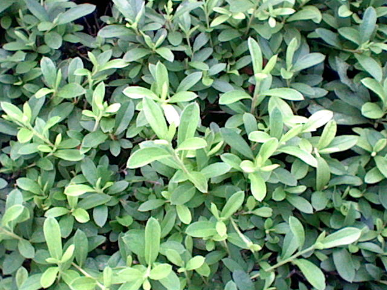
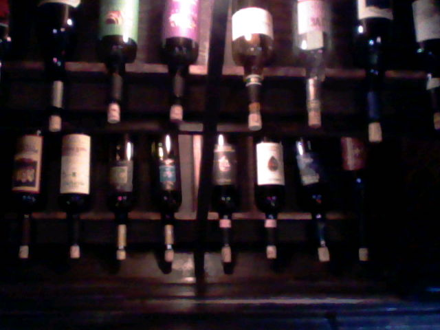
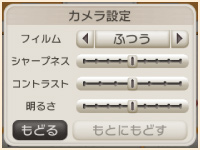
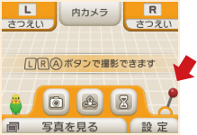
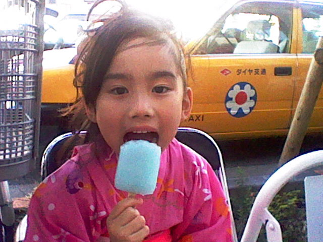
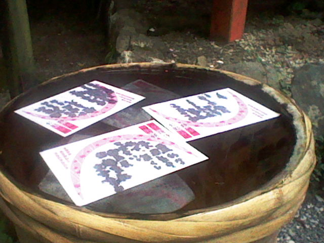
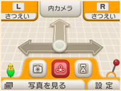
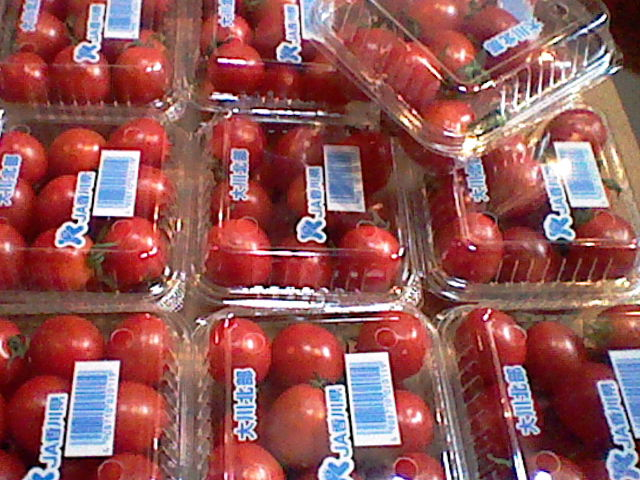
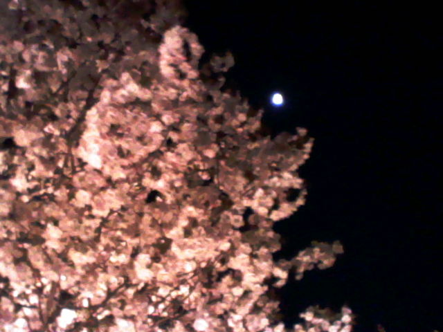

少し慣れてきたら、「カメラ設定」を変更してみると良いと思います。特に「コントラスト」を強めに、「明るさ」を弱めにすると、黒が締まってクッキリとした写真になりやすいです。たとえば野外の撮影では、コントラストをふたつ上げて、明るさをひとつ下げています（作例：左）。ただし、室内のときは明るさをひとつ上げたり（作例：右）、状況によって最適な設定は変わります。プレビューや撮った写真を確認しながら、できるだけその都度設定してみてください。
※
ニンテンドー3DSカメラ下画面右下にある赤いレバーをタッチして、カメラのアイコンをタッチ。「カメラ設定」を開くと、シャープネス／コントラスト／明るさを調節できます。



うまく立体的に撮れないときには、赤いレバーのところから3Dフォーカスの設定を開いて、手動で調節してみてください 。一番手前の被写体のところで左目画像と右目画像の位置を合わせると、見やすい3D写真になります。特に距離が近いモノや、形が複雑なモノに有効だと思います。
※
通常は3Dオートフォーカスで自動的に調整されますが、タッチスクリーンやスライドパッドを使って、手動で前後左右に3Dフォーカスを調節できます。



これは3D撮影に限りませんが、撮影スポットとしては、できるだけ順光で、明るい場所を選ぶと、いい写真を撮りやすいです。逆光だったり、暗い場所では、先に挙げた明るさの調整や3Dフォーカスの調整を試してください。また、「撮影モード」にある「暗いときカメラ」を使ってみても良いでしょう。